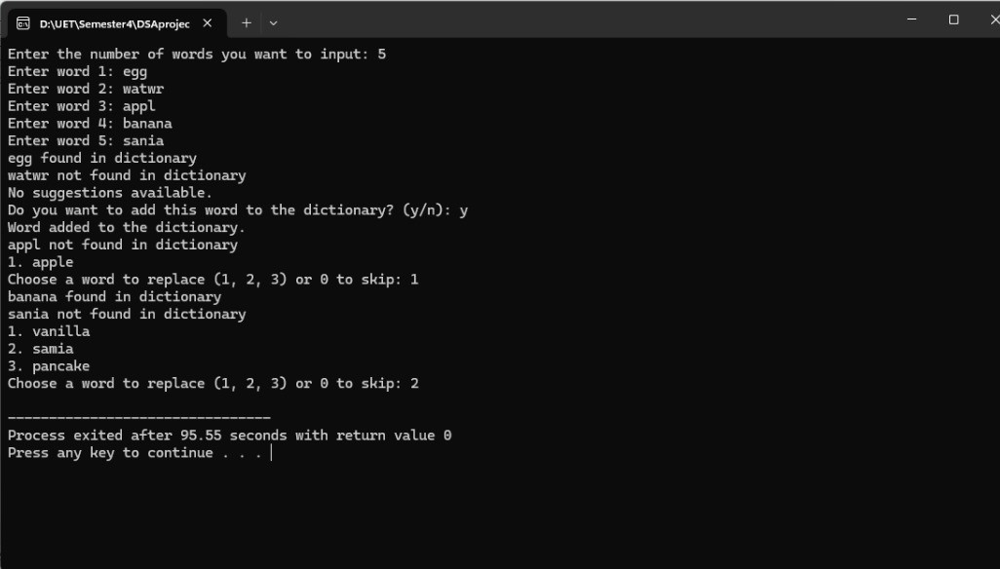
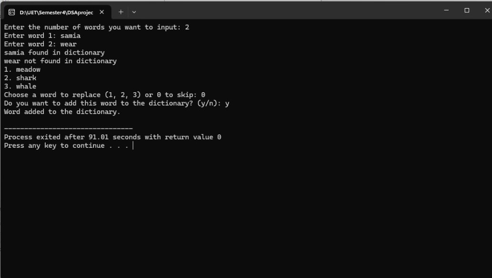

Spell Checker


Developed an advanced spell checker application in C++ that utilizes file handling for maintaining a dynamic dictionary. This system is designed to assist users in identifying and correcting spelling errors efficiently. Key features and functionalities include:
- User Input Validation: Checks user-entered words against a pre-existing dictionary to identify spelling errors.
- Dictionary Management: A dictionary file containing correctly spelled words, which can be updated with new entries.
- Checking: Compares user input with the dictionary and flags potential spelling errors.
- Suggestions for Corrections: Provides possible correct spellings for misspelled words using efficient algorithms.
- File Handling: Reads the dictionary from a file at startup and writes new words to the dictionary file, ensuring the dictionary is always current.
- User-Friendly Interface: Offers clear prompts and messages, displays suggestions in a readable format, and allows users to add new words to the dictionary seamlessly.
This project demonstrates a robust application of C++ for practical problem-solving, showcasing skills in algorithm development, file handling, and user interface design.